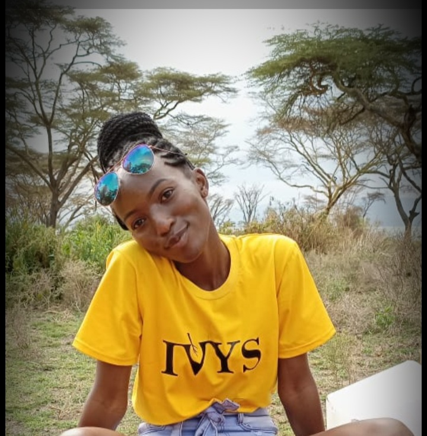

<!DOCTYPE html lang="en">
</html>
	<link href="css/bootstrap.css" rel="stylesheet" type="text/css" media="all">
	<link rel="stylesheet" href="css/style.css" type="text/css">
	<head><title> JOYLINE'S PORTOFOLIO</title>
	 </head>
			<body> 
				<h1>  <pre>
    Joyline Chepngeno
		Currently a <strong>hybrid prep student </strong>in Moringa School
		07-15-940-084
		joylinechep001@gmail.com
					  </pre>
				</h1>
					<h2>
		This is a list of projects that i have worked on<br>

    <pre> ONE </pre>	 <pre> TWO</pre>
				 </h2>
						<h3> PROFILE <br> 
			<pre>                                                            
 Born and raised in <tittle="A COUNTRY IN AFRICA"> Kenya as                  <pre>
 well as schooled here.                                                        EDUCATION
 successfully completed my primary and high school.                          High school certification
 The study of computer in high school was a leeway to                        Currently a computer science student in Kabarak university
 the wonderfull experince of starting my programming.</pre>  <pre>EDUCATION   </pre>
             </h3>
					 <p>
					WHY PROGRAMMING
					To begin with programming is a hands on skill thing.Well it fascinates
					at how one can be sitting behind a machine and come up on something that 
					can be worked on.
					</p>
					<p>
					Am currently working on deepening my knowledge on software development
					To become part of developers and grow towards a skilled if not expertise.
					</p>
				<h4>
					HOBBIES
					<P>I am a fan of sports.Actively participated in high shcool.
						Hockey to be specfic.

					<p>I am a problem solver.I love to explore what entails a problem and 
						work around it to provide solutions.
						<p> Who doesn't love travelling.I am an outdoor person.Talk of zip-lining,
							bike-riding.Lets go on a trip!
							Not forgetting bonfires.
					</p>
					</P>
				</h4>


			</body>
	</html>